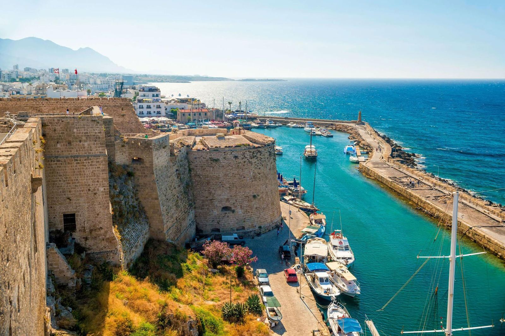
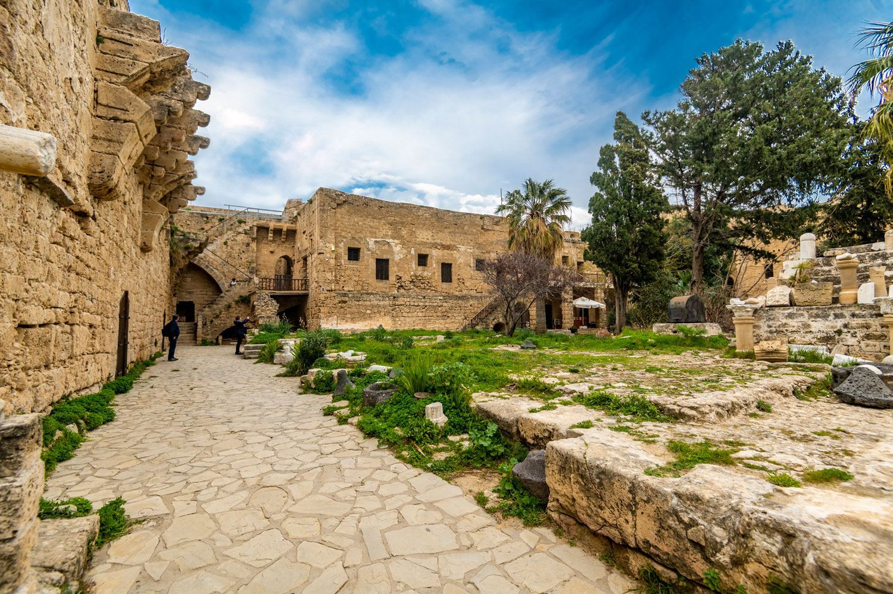
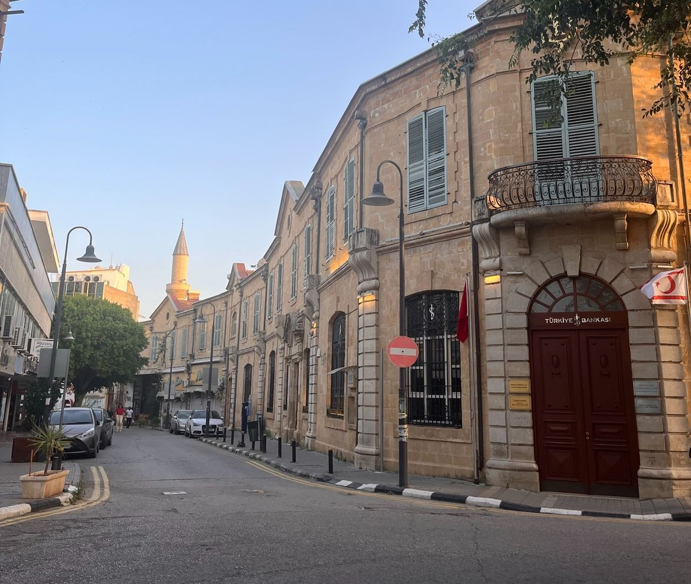
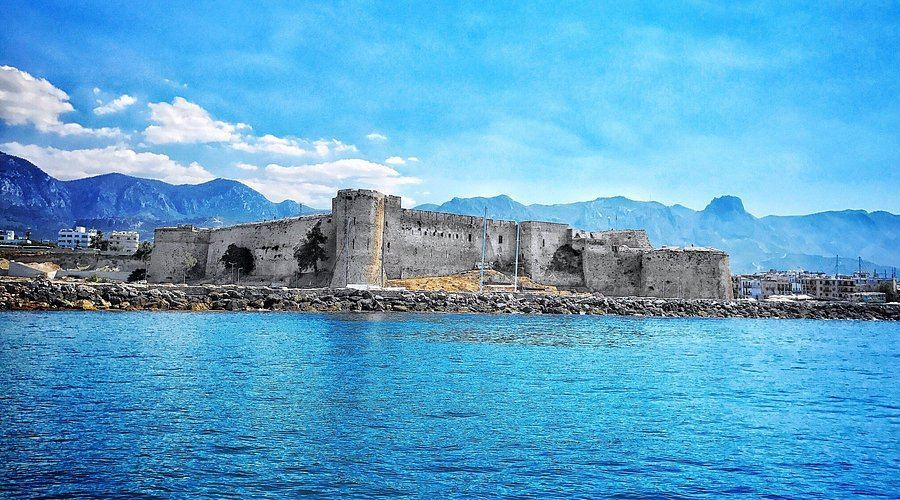
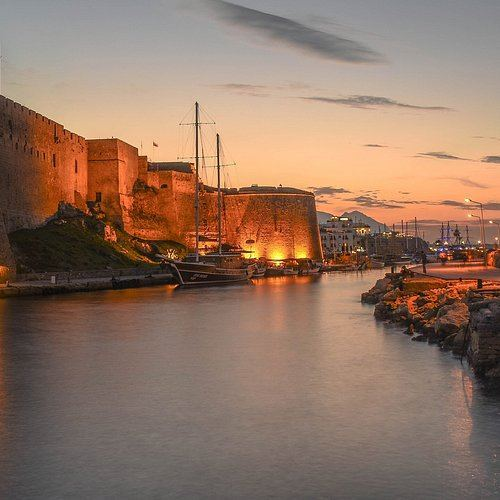

Batık Gemi Müzesi'ndeki gemi, MÖ 300 civarında Akdeniz'de yelken açmış ve Girne açıklarında batmıştır — şimdiye kadar kurtarılan en eski Yunan ticaret gemisidir. Yerel bir dalgıç 1965 yılında onu tesadüfen bulmuş ve arkeologların gövdeyi çıkarıp parçalarını birleştirmesi yıllar almıştır.
Etkileşimli Rota Zaman Çizelgesi
Yola çıkmadan önce rota hakkında hızlı bir fikir edinmek için bu gömülü haritayı kullanın, ardından aşağıdaki durakları sırayla takip edin.
Duraklar
Zaman çizelgesini sırayla takip edin, ancak zamana, hava durumuna ve çalışma saatlerine bağlı olarak rotayı esnek tutun.
Girne'nin at nalı şeklindeki limanı Venedik dönemine kadar uzanır ve restoran ve kafelere dönüştürülmüş eski taş depolarla çevrili olarak şehirde en çok fotoğrafı çekilen nokta olmaya devam etmektedir.
🚶♂️ İskele boyunca 5 dk yürüyüş (400m)

Girne Kalesi
Limandan Girne'nin tarihi çekirdeğini oluşturan devasa taş kale surlarına doğru ilerleyin.
Bizanslılar ilk kaleyi 7. yüzyılda Arap akınlarına karşı koruma amacıyla buraya inşa ettiler. 1191'de Aslan Yürekli Richard tarafından ele geçirilmiş, Lüzinyanlar tarafından genişletilmiş ve 1489 civarında Venedik egemenliğinde şimdiki halini almıştır.
🚶♂️ Kale surları içinde 2 dk yürüyüş

Batık Gemi Müzesi
Doğrudan kale alanının içinde yer alan bu müze, var olan en eski kurtarılmış ticaret gemisi batıklarından birini sergiliyor.
Sergilenen gemi MÖ 300 civarında batmıştır ve bugüne kadar kurtarılan en eski Yunan ticaret gemisidir — 1965 yılında yerel bir dalgıç tarafından bulunmuş ve yıllar süren bir kazıdan sonra parçaları titizlikle yeniden bir araya getirilmiştir.
🚶♂️ Dar arka sokaklara doğru 10 dk yürüyüş (800m)

Eski Şehir Sokakları
Liman hattının hemen arkasındaki tarihi yerel karakterle dolu dar taş döşeli sokaklarda dolaşın.
Bu yollar liman sahilinin hemen arkasında yer alır ve Girne'nin turizm öncesi karakterinin çoğunu korur; birkaç adım ötedeki işlek sahilden çok daha sessiz olan dar taş ara sokaklardır.
🚶♂️ Yokuş yukarı 5 dk yürüyüş (300m)
📸 En İyi Fotoğraf Noktası

Girne Kalesi Deniz Manzarası Noktaları
Çarpıcı okyanus manzaralarını yakalamak için geniş savunma duvarlarına tırmanın. Bu panoramik bakış açısı tarihi bir bağlam sağlar.
Kalenin deniz manzaralı terasları ziyaretçilere çarpıcı panoramik Girne Limanı manzaraları sunarak onları fotoğrafçılık ve gezi için en iyi yerlerden biri yapar.
🚶♂️ Sahile doğru 10 dk yürüyüş

Liman Gün Batımı Bitişi
Gün batımı için limanın taş duvar kenarına geri dönün. Deniz kenarında yemek ve akşam fotoğrafları için ideal bir bitiş noktası sağlar.
Güneş batarken, liman taşları ve eski depo cepheleri sıcak altın rengi bir ışık alır — ister fotoğraf çekmek ister yavaş bir yürüyüş yapmak için olsun, yerliler buranın günün en iyi saati olduğunu düşünür.
Pratik bilgiler
Merkez Girne'ye girdikten sonra bu rotayı yürüyerek geçmek kolaydır.
Otoparklar yoğun olabilir, bu nedenle gün batımından önce gelin.
Kapanış saati sorunlarından kaçınmak için kale/müze durağını daha erken yapın.
İçeriden ipucu
Kaleyi ziyaret ettikten sonra ekstra zamanınız kalırsa, ana liman kafelerinin ötesine daha küçük yan sokaklara doğru yürüyün. Buralar genellikle daha sessizdir ve en yoğun turistik bölgelerden uzakta yerel dükkanlar ve gizli manzara noktaları sunar.
🎧 Liman Gün Batımı İpucunu Dinleyin:
Dökümü okuyun
Limana mı iniyorsunuz? Zamanlama her şeydir. Öğleden sonra çok geç gelmeyin, yoksa kale saatlerini tamamen kaçırırsınız. Açıkken doğrudan Girne Kalesi'ne gidin, surları keşfedin ve ardından zamanlamayı mükemmel bir şekilde ayarlayın, böylece altın saat başladığı an doğrudan liman taşlarına adım atabilirsiniz.